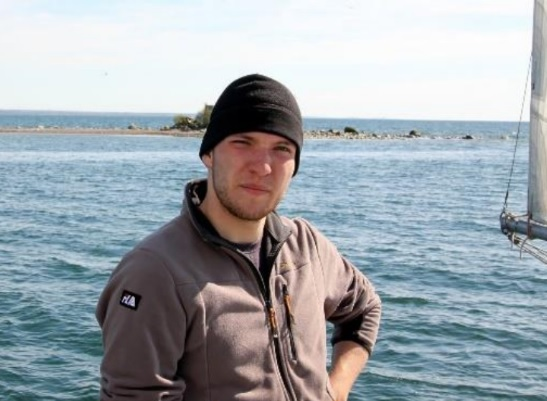

<div class="content bg-light">
  <h2>Sylwetka kapitana</h2>
  <div class="d-flex flex-column flex-md-row">
    <div class="m-3">
        Swoją żeglarską przygodę rozpoczął już w liceum. Pierwsze szlify zdobywał na kursach żeglarskich prowadzonych przez
        HOW „Zatoka”. Pływał m.in. po wodach Bałtyku oraz Morza Północnego. Z zamiłowania ratownik wodny oraz górski.
    </div>
    <div class="col-12 col-md-5 d-flex align-items-stretch">
      
    </div>
  </div>
</div>

